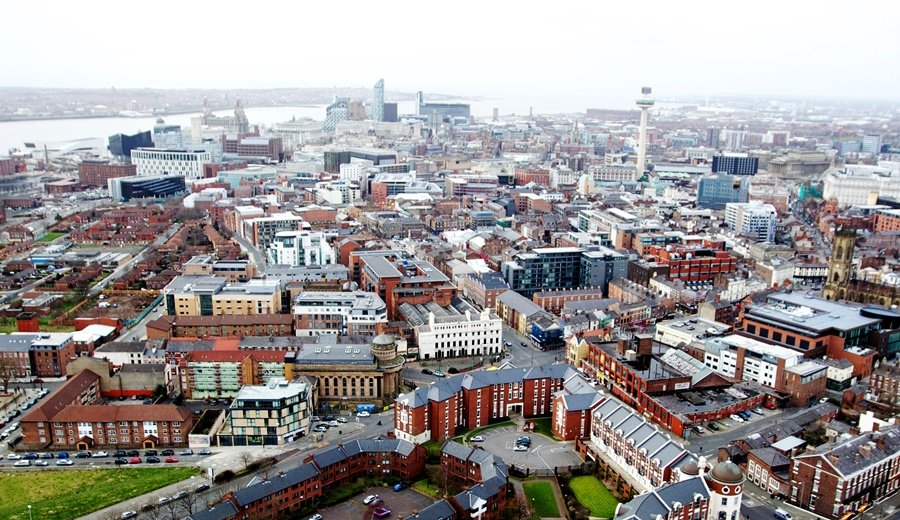
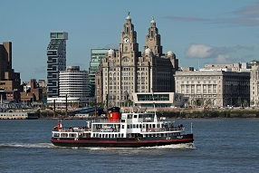
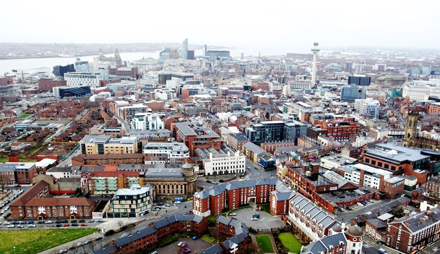
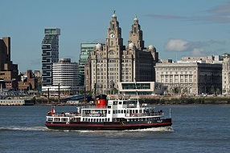
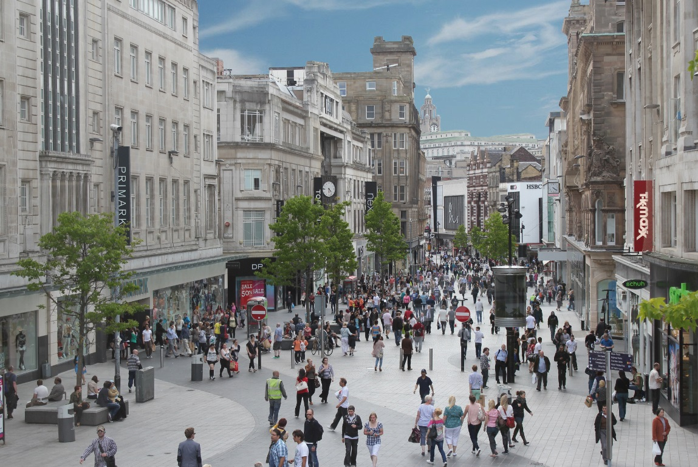
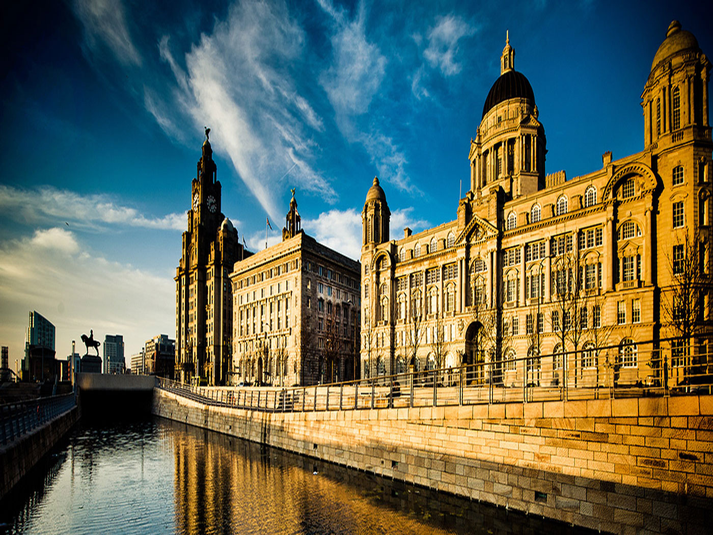
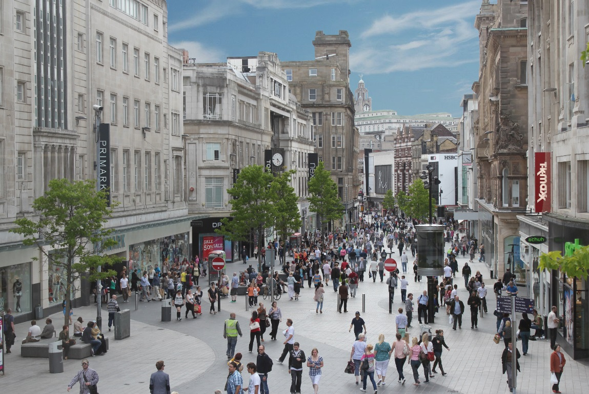
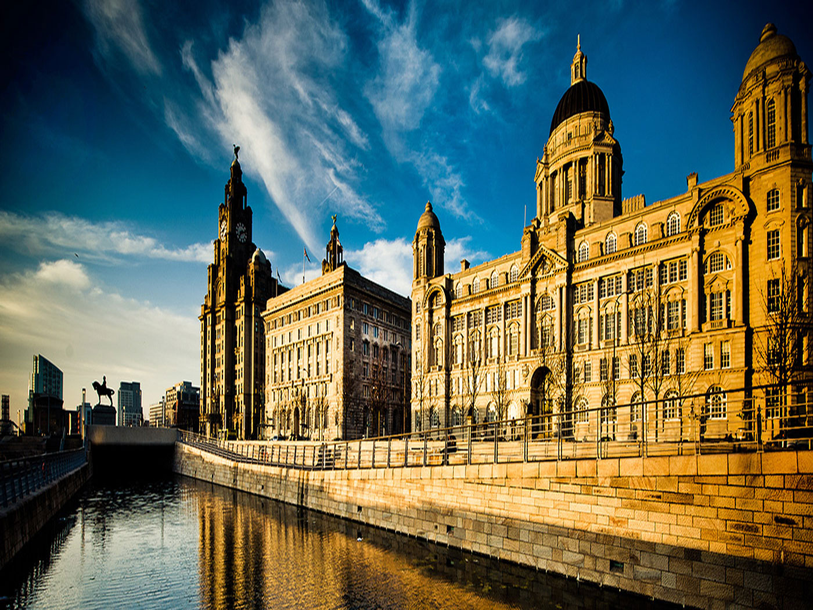

Liverpool
Bienvenue à Liverpool
Réputée pour engendrer la mélancolie, Liverpool est une ville où les immeubles délabrés côtoient de superbes monuments classés, d'impressionnantes cathédrales et des magasins animés. À jamais associée aux "Quatre Garçons dans le vent", la ville est également connue pour ses deux clubs de football et accueille chaque année l'une des plus célèbres compétitions hippiques au monde. Toutefois, son passé glorieux ne doit pas faire oublier que Liverpool est résolument tournée vers l'avenir et qu'elle entend bien reconquérir une place de premier ordre en Europe.
De son extraordinaire situation sur le large estuaire de la Mersey – avec ses lumières vacillantes, son brouillard, ses mouettes et ses grandes zones désertes, les habitants de Liverpool ont tiré leur caractère tenace et leur esprit caustique. Clé de voûte du pouvoir maritime de la Couronne britannique pendant deux siècles, le port a bâti sa puissance sur l'esclavage, le commerce et l'émigration. Dans les années 1960, le développement du transport par conteneurs a tué l'activité des docks et plongé la ville dans une longue période de crise, dont les traces sont malheureusement encore bien visibles aujourd'hui. Toutefois, les grands bâtiments sont encore debout, la légende des Beatles ne cesse de s'accroître et la fierté de ses habitants semble n'avoir jamais été aussi forte.
Les lieux à visiter
-
Albert Dock
Délabré il y a vingt ans, l'Albert Dock fait désormais la fierté de Liverpool et attire de nombreux touristes depuis sa réhabilitation. Les eaux auparavant putrides de ses bassins sont désormais navigables, et les entrepôts jadis abandonnés accueillent aujourd'hui bars et magasins, ainsi que plusieurs musées de qualité. L'Albert Dock étant le plus important groupe de bâtiments classés de Grande-Bretagne, sa restauration se devait d'être exemplaire pour devenir le symbole des espoirs de toute une ville. Construit entre 1841 et 1848, il fut l'un des premiers exemples au monde de quai en construction fermée.
Aujourd'hui, le très renommé Merseyside Maritime Museum rappelle de façon inventive l'activité portuaire passée de la ville. Proche des quais, la Tate Liverpool abrite la National Collection of Modern Art, la plus importante collection d'art moderne et contemporain en dehors de Londres. Le musée consacré aux Beatles aurait grand besoin d'être rajeuni, bien que sa collection se soit récemment enrichie du fameux piano Steinway de John Lennon, sur lequel il composa la chanson Imagine. De l'autre côté de Canning Dock, le Museum of Liverpool Life est consacré aux artistes du Merseyside, aux footballeurs, à l'industrie locale et aux émissions télévisées. La zone située au nord de l'Albert Dock est dénommée Pier Head, du nom de la jetée (aujourd'hui disparue) qui y fut construite dans les années 1760. De cette époque, Pier Head a également gardé son rôle d'embarcadère. Elle est désormais plus fréquentée par les voyageurs prenant le ferry pour Birkenhead que par les émigrants souhaitant traverser l'Atlantique. Pier Head est dominée par trois bâtiments imposants datant du Liverpool des jours glorieux : le Port of Liverpool Building (1907), avec son dôme rappelant celui de la cathédrale Saint Paul de Londres ; le Cunard Building (1916), de style italien et l'emblématique Royal Liver Building, avec ses célèbres liver birds de cuivre. Le liver birds est l'oiseau qui apparaît sur les armoiries de la ville. Détail amusant : d'un aigle fier il est devenu au fil des siècles cormoran, et la fleur de lys qu'il tenait dans son bec s'est transformée en algues.
-
Mathew Street
Le tourisme à Liverpool n'aurait certainement pas le même visage si les Beatles n'y étaient pas nés. Endroit emblématique de cette "beatlesmania", la Mathew Street est au centre des événements durant la semaine consacrée au groupe chaque été au mois d'août. C'est en effet dans la cave d'un entrepôt victorien de Mathew St que s'installa le célèbre Cavern Club entre 1957 et 1973, année de sa démolition. Entre mars 1961 et août 1963, les "Quatre Garçons dans le vent" y donnèrent pas moins de 292 concerts et c'est ici que Brian Epstein ("le cinquième Beatles") les vit jouer pour la première fois.
Reconstruit en 1984, le club est désormais la propriété de la société Magical Mystery, qui organise des visites en bus de la ville permettant en 2h30 de faire le tour des maisons des membres du groupe, de leurs écoles et de leurs lieux de naissance, sans omettre d'autres adresses incontournables comme Penny Lane. The Grapes, où les Beatles aimaient boire quelques pintes entre deux concerts, est l'un des seuls établissements authentiques qui subsiste de cette période. Nombreux sont, en revanche, les établissements, tels que l'Abbey Road Oyster Bar, le Lennon Bar ou le Lucy in the Sky Cafe, qui n'ont de "Beatles" que le nom. Le pire semble toutefois être atteint avec le centre commercial Cavern Walks et la très controversée statue érigée à la gloire du groupe en 1974. En 1976, un club baptisé Eric's ouvrit ses portes sur le parking de fortune qui, à l'époque, était tout ce qui restait du Cavern Club d'origine. Ce club s'est fait une renommée en accueillant des talents locaux tels que Echo & the Bunnymen ou the Teardrop Explodes.
-
Walker Art Gallery
Regard limpide, cheveux longs et sourire énigmatique... Il ne s'agit pas là d'une description de George Harrison en 1965, mais plutôt des beautés préraphaélites qui sont exposées à la magnifique Walker Art Gallery. Entre autres pièces de cette école, le visiteur pourra notamment y admirer le Dante's Dream de Rossetti, Lorenzo et Isabella de Millais, ou encore The Awakening Conscience d'Holman Hunt. Parmi les œuvres victoriennes classiques, citons Persée et Andromède de Lord Leighton ou encore And When Did You last See Your Father? de WF Yeame. Sont également exposées de nombreuses œuvres italiennes, flamandes et impressionnistes, ainsi que d'autres plus récentes, comme le très copié Peter Getting out of Nick's Pool de David Hockney. Situé à deux pas, le Liverpool Museum est consacré à l'archéologie et à l'histoire naturelle. Il possède également un planétarium.
-
Lime Street
Ancien quartier des prostituées, Lime Street est aujourd'hui l'une des rues principales de Liverpool. En face de ce bâtiment du XIXe siècle, se dresse le Saint George's Hall, un des édifices les plus grandioses de la ville. Datant de 1854, il est considéré comme l'un des plus beaux exemples d'architecture néoclassique au monde, mais la circulation incessante le rend quelque peu difficile à admirer. Alors que l'extérieur ressemble à un imposant temple grec, son carrelage et sa grande salle voûtée donnent à l'intérieur un aspect roman. N'hésitez pas à vous offrir une visite guidée pour vous rendre compte de la magnificence des lieux. Certains hôtels de Lime Street sont parmi les plus célèbres de la ville. Comme le laisse entendre son nom, l'American Bar était très prisé des Forces armées américaines pendant la Seconde Guerre mondiale. À quelques pas, le Vines est un superbe spécimen des palaces de style 1900. Enfin, souvent considéré comme le nec plus ultra des hôtels de Liverpool, le célèbre Adelphi Hotel, recevait jadis les voyageurs fortunés avant ou après leur traversée de l'Atlantique.
-
Anglican & Metropolitan Cathedrals
Sur la rive ouest, Hope Street est dominée par les deux cathédrales de la ville (la catholique au nord et l'anglicane au sud). La Metropolitan Cathedral (catholique), de style moderne, devait, à l'origine, surpasser Saint-Pierre de Rome par sa taille, mais la Seconde Guerre mondiale et la récession d'après-guerre qui a frappé Liverpool ont poussé les architectes à moins d'ambition. Achevée en 1967, elle comprend une crypte dessinée par Sir Edwin Luyters, l'architecte initial du projet. Les travaux de la Liverpool Cathedral, cathédrale anglicane néogothique monolithique en grès rouge, ont duré de 1902 à 1978. Tout dans cet austère monument fait preuve d'un gigantisme impressionnant. Sa cloche centrale est la troisième au monde par sa taille et l'on a de vastes panoramas sur Liverpool du haut des 101 m de sa tour. La cathédrale est l'œuvre majeure de l'architecte Sir Giles Gilbert Scott qui s'est consacré à sa construction jusqu'à sa mort en 1960.
Découvrez la beauté de Liverpool
 





 


